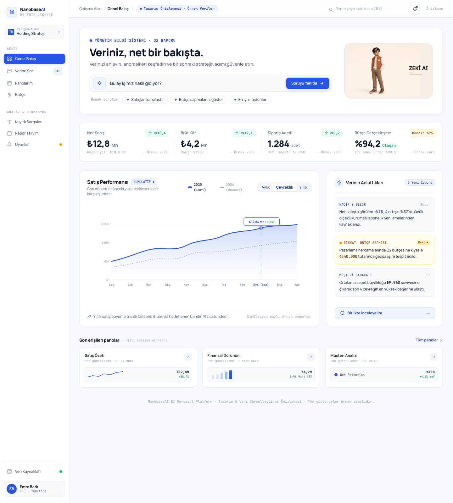
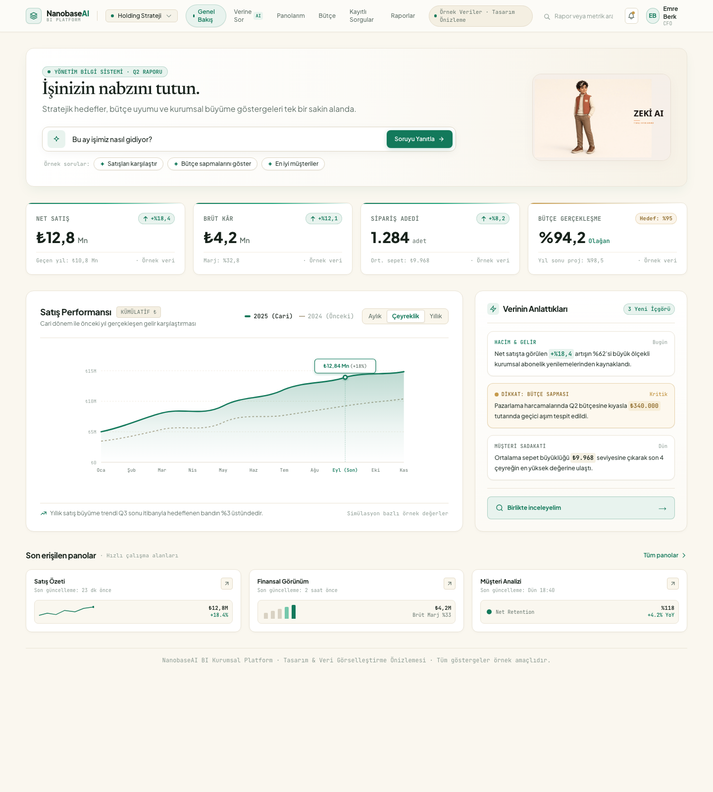
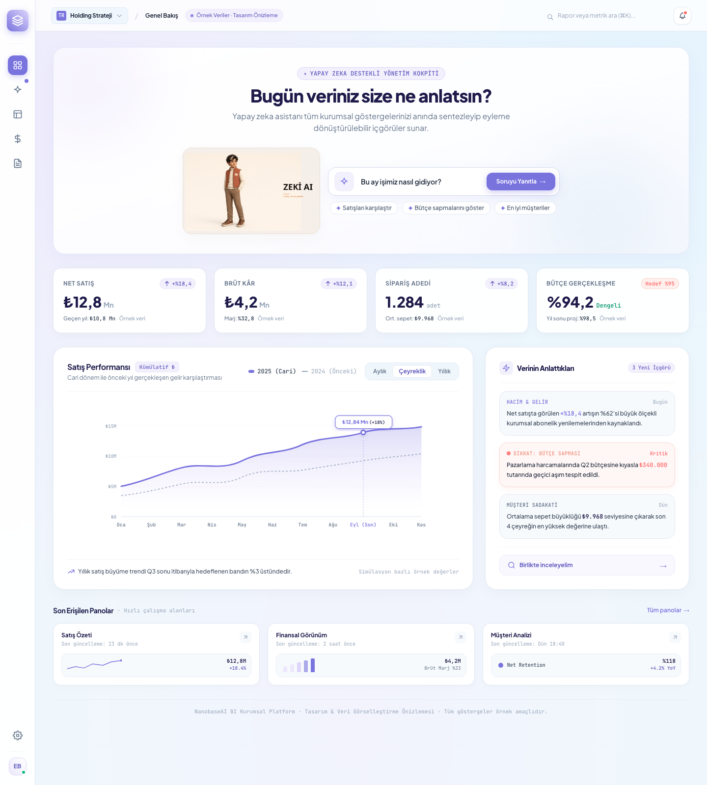

01 · Porselen / KobaltBeyaz yüzeyler, net mavi vurgular. Düzenli ve güçlü bir yönetim ekranı.Tasarımı aç ↗
02 · Krem / ZümrütSıcak, zarif ve editoryal. ZEKİ AI karakterinin renkleriyle doğal bir uyum.Tasarımı aç ↗
03 · Buz / LavantaFerah katmanlar ve yumuşak renkler. Soruyla başlayan bir analiz deneyimi.Tasarımı aç ↗